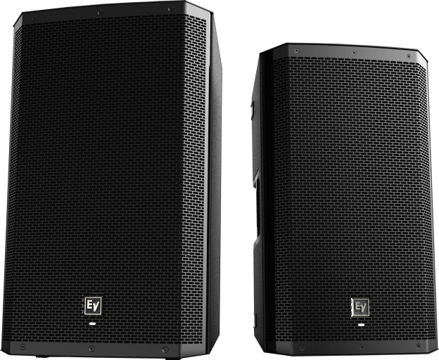
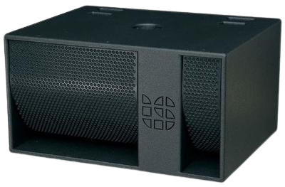
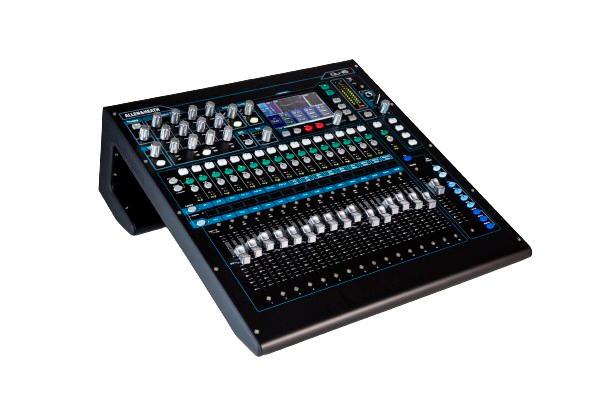
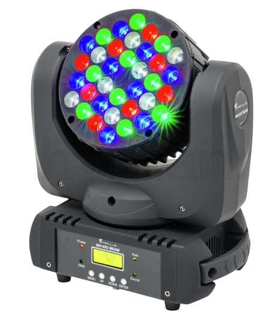
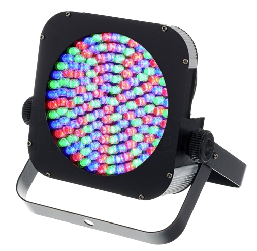
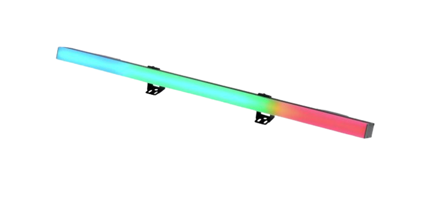

Sound Equipment
ElectroVoice ZLX-12P
The ZLX-12P is meticulously crafted to offer unparalleled power and performance, exceeding the capabilities of its counterparts in the realm of small-format loudspeakers. Its compact and lightweight design is engineered to deliver exceptional sound reinforcement and stage monitoring, particularly ideal for intimate venues. Pound for pound, there simply isn't another composite box of comparable size that can rival its impressive capabilities.
The Electro-Voice ZLX series is renowned for its exceptional performance and reliability in the realm of professional audio. Specifically, the Electro-Voice ZLX loudspeakers, exemplified by models like the ZLX-12P, are engineered to deliver premium sound quality in a compact and portable package. With innovative design features and cutting-edge technology, ZLX loudspeakers are favored by musicians, DJs, and audio professionals alike. Their rugged construction ensures durability, making them suitable for a variety of applications, from live performances to installations in venues of varying sizes. The ZLX series is celebrated for its clarity, precision, and power, offering users an immersive audio experience that brings their performances to life. Whether used as main speakers, stage monitors, or for mobile sound reinforcement, Electro-Voice ZLX loudspeakers consistently deliver exceptional sound quality and reliability, making them a top choice for professionals in the audio industry.
Subwoofers
Logic System XP180
The Logic System XP180 subwoofer is a powerful and versatile low-frequency speaker designed to deliver exceptional bass performance in a variety of audio applications. Featuring a robust construction and advanced engineering, the XP180 is engineered to reproduce deep, impactful bass with clarity and precision.
With a compact yet efficient design, the XP180 is suitable for both portable and installed sound reinforcement setups, making it an ideal choice for venues of various sizes, from small clubs to large auditoriums. Its compact footprint allows for easy integration into existing audio systems without sacrificing performance or coverage.
The XP180 utilizes high-quality components and advanced technologies to achieve its impressive sound reproduction capabilities. Its driver configuration is carefully optimized to maximize bass output while minimizing distortion, ensuring clean and powerful low-frequency reproduction across the audible spectrum.
In summary, the Logic System XP180 subwoofer combines robust construction, advanced engineering, and powerful bass performance to deliver an immersive audio experience suitable for a variety of live sound reinforcement and music playback scenarios.
Mixing Consoles
Allen & Heath Qu-16 Digital Mixing Console
The Allen & Heath QU-16 console is a flagship digital mixer renowned for its versatility, exceptional sound quality, and intuitive workflow. Designed to meet the demands of live sound reinforcement, recording, and production environments, the QU-16 offers a comprehensive array of features suitable for a wide range of applications.
At its core, the QU-16 boasts high-quality microphone preamps, ensuring pristine audio capture from microphones and instruments. Its digital processing capabilities include powerful built-in effects, dynamics processing, EQ, and routing options, allowing users to sculpt and shape their sound with precision.
One of the standout features of the QU-16 is its intuitive user interface, which includes a large touchscreen display and dedicated rotary encoders for quick and easy access to essential functions. This streamlined interface enhances workflow efficiency, making it ideal for both seasoned professionals and novice users alike.
Overall, the Allen & Heath QU-16 console represents a pinnacle of digital mixing technology, combining premium sound quality, intuitive operation, and versatile functionality to meet the needs of modern audio professionals.
Lighting Equipment
MH-100 Beam Moving Head Light
At the heart of the MH-100 Beam is its powerful LED light engine, which features 36 individual 3-watt LEDs. These LEDs are carefully selected to provide a balanced combination of color mixing capabilities, brightness, and energy efficiency. With a total output of 108 watts, the MH-100 Beam produces intense beams of light that can illuminate large areas with ease.
One of the standout features of the MH-100 Beam is its narrow beam angle, which allows it to create sharp and defined light beams that cut through the air with precision. This makes it ideal for creating dynamic aerial effects, beam shows, and intense lighting displays.
Static Lighting
FlatPar 150s
The Stairville LED Flood Panel 150 40° RGB features 150 LEDs, each with the fixed colours red, green, and blue. As its name indicates, it has a beam angle of 40°, which allows wide-area illuminations of walls, backgrounds, and large displays. With a width of 260 mm, a height of 210 mm, and a depth of only 68 mm, its design is surprisingly flat and sleek, and each unit weighs just 1.8 kg. The LED Flood Panel can be operated in stand-alone mode via four rear-mounted menu buttons located below its display or via DMX in three, four, or eight-channel mode. The three-pin DMX input and corresponding output are located next to the display, as are the IEC sockets for the mains input and power output.
The LED Flood Panel offers ten pre-programmed light shows, music control, a master-slave mode, a strobe function and, last but not least, the option of mixing the colours of your choice.
Light Bars
100/32 Pixel Bars
The Eurolite LED PR-100/32 DMX is a versatile LED par can light designed for professional lighting applications such as stage performances, concerts, clubs, and events. Known for its compact size, energy efficiency, and vibrant color output, the PR-100/32 DMX offers a range of features to enhance any lighting setup.
One of its key features is its use of light-emitting diodes (LEDs) as the light source. LEDs provide several advantages over traditional lighting technologies, including lower power consumption, longer lifespan, and the ability to produce a wide range of colors without the need for color filters or gels. The PR-100/32 DMX incorporates 32 high-power LEDs, allowing it to generate bright and vivid colors while consuming minimal energy.
Sligo Sound & Light is based in the northwest of Ireland. With over 8 years in sound engineering and lighting design, along with a full compliment of cutting edge high quality equipment, we have the capability to make your event look and sound the best it possibly can! If you have an event coming up, feel free to get in touch using our Contact Form